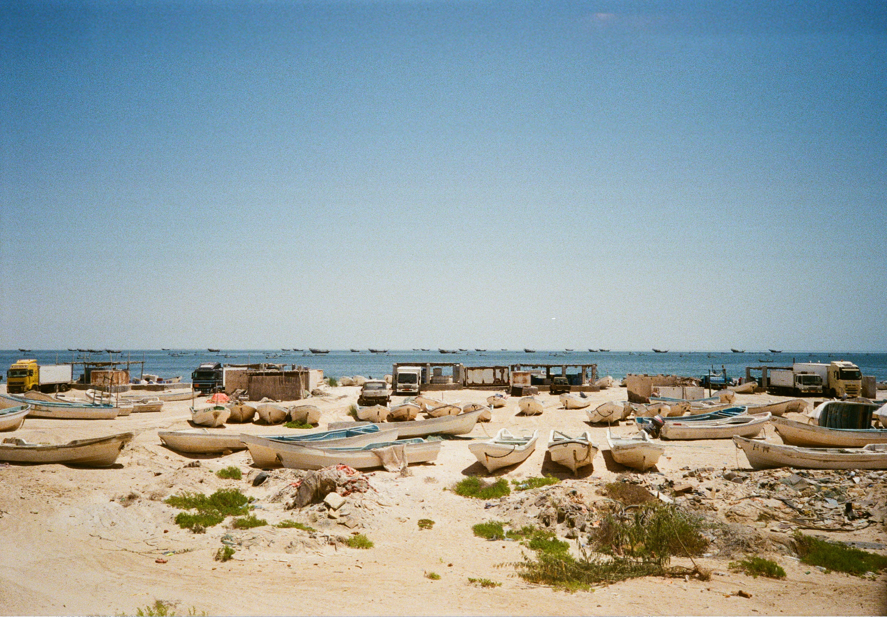

Thought Piece
Andrew Horstead on power system reinvention for utilities
How management teams should be thinking about the power system
Structural electricity demand is back, but the power system is not yet ready to absorb it. Electrification, industrial decarbonisation and AI-driven data centres are turning electricity from a low-growth utility service into the main delivery mechanism for economic decarbonisation.
The constraint is no longer only whether enough clean generation can be built; it is whether networks, system operators, regulators and utilities can connect, move, balance and protect that power in real time.
Value is therefore shifting towards regulated grids, flexible capacity, storage, long-term contracts and digital control. Geopolitics is now part of the same operating model, feeding through fuel prices, LNG access, collateral needs, cyber risk and equipment supply.
For utilities, the winning model is becoming more regulated, more contracted, more digital and more resilient. The question is no longer who owns megawatts, but who can orchestrate the system around them.
The power system in the energy transition
The power system is the chain that turns primary energy into reliable electricity at the socket: generation, networks, system operation, flexibility markets, regulation and the digital co-ordination that increasingly links them. Utilities sit within a wider institutional architecture of policymakers, regulators, system operators and network companies, all of whom now need to move faster and in closer coordination.
The transition depends on how these stakeholders work together: without a resilient, flexible and co-ordinated system, renewable capacity targets will be much more difficult. The decisive levers are network investment, connection reform, permitting, flexibility market design, regulated returns and price signals that make demand respond when the system needs it.
"Power markets have entered execution mode. Value will accrue to players that can secure connected capacity, monetise flexibility, and protect affordability and resilience." Andrew Horstead, EY Global P&U Insights
Demand is back, and structural
For years, planning across many utilities and network operators in many developed markets rested on a low growth electricity assumption. More recently, demand forecasts have been much more aggressive, driven by expected electrification. In Great Britain, electricity demand is expected to be around 38 per cent higher by 2035 under central pathway assumptions, after two decades of slow decline1, trends mirrored across much of Europe. These demand forecasts have not often been met – until now. Electricity has now affirmed itself as the delivery mechanism for much of decarbonisation, and demand growth is returning through three durable channels.
Transport, heating and buildings
This is policy-backed, large-scale and persistent. It is not a short-term price response; it is embedded in national decarbonisation strategies and long-term infrastructure plans. In the UK, battery electric vehicles (BEV) accounted for 22.4 per cent of new car sales in the first quarter of 2026, a demand side marker that matters because vehicles connect at the edge of the distribution system.
Industrial decarbonisation
Heavy industry is looking to electricity, low carbon molecules and long-term clean power supply to reduce emissions and protect competitiveness. At a European level, a 32 per cent electricity share of final energy consumption by 20302 frames policy ambitions.
Artificial intelligence and data centres
This newer load is not just large, it is clustered, fast moving and intolerant of weak reliability. Hyperscalers want speed of connection, consistent clean supply and high resilience. Data-centre demand is material and highly uncertain. Aurora analysis suggests data centres could rise from around 4 per cent of GB electricity demand today to 11 per cent by 20353, while NESO's Future Energy Scenarios (FES) 2025 models an increase from 7.6 TWh in 2024 to 20–41 TWh by 20354. That changes network planning from asking whether demand will recover to asking where credible load will arrive first.
The bottleneck is networks, not megawatts
The main challenge has shifted from approving enough generation to delivering the networks, flexibility and operational control needed to use it. Networks are path dependent, capital intensive, and slow to expand. Data centres and EV charging can appear within years, but transmission and distribution reinforcement can take much longer, particularly where planning, land access and equipment procurement collide.
Connection queues reveal shortages of substations, transformers, cables, engineering capacity, construction labour and system planning capability. The sequencing problem matters as much as the queue: when generation arrives ahead of networks, output is curtailed and capture rates weaken, softening the business case. When demand cannot connect, load growth does not materialise. Negative price events are the market symptom of this constraint. The IEA reports that negative-price hours reached around 6 per cent of all hours in France, Germany, the Netherlands and Spain in 2025, up from roughly 3–5 per cent in 2024. In South Australia, negative-price hours reached 30 per cent, while in the US, California it reached 11 per cent5. The signal is clear: clean electricity is increasingly available in some hours, but the system lacks enough flexibility, demand response, storage or transfer capacity to use it efficiently.
The rise in negative price events shows that the electricity challenge is no longer only about building more clean generation. It is increasingly about building a system that can absorb, shift and orchestrate that generation in real time. That puts grids, flexibility and digital control at the centre of the market. Network capacity still has to expand, but the intelligence layer must scale with it: better forecasting, dispatch, congestion management, outage response, asset performance, distributed energy resource (DER) integration and protection systems. Smart grids, automation, digital twins, analytics and AI-enabled decision support are becoming essential tools for turning a more decentralised and weather-dependent power system into one that operators can see, optimise and secure.
Geopolitics is now inside the operating model
Geopolitics has moved from a background risk to a structural operating variable. It now flows directly into utility economics through fuel sourcing, LNG availability, wholesale power volatility, collateral requirements, insurance costs, cyber exposure and the availability of critical equipment. The current conflict in the Middle East has shown how fuel, LNG, coal, cybersecurity and supply chains can all tighten at once. Inflated prices triggered by Russia's invasion of Ukraine in 2022 added an estimated €930 billion to the EU's fossil import costs6. The same exposure is visible in the current Middle East conflict: by 22 April 2026, the European Commission estimated that higher prices had already added over €22 billion to the EU's energy import bill, without delivering any additional energy7. The lesson from both crises is clear: a geopolitical shock can become a shock in earnings, liquidity and capital allocation.
This changes board level questions for utilities: management teams must now explore how much to hedge, when to inject gas into storage, how much liquidity to hold, how exposed merchant positions are and which operational technology systems need the strongest cyber protection. Utilities with wholesale market exposure, unhedged positions or heavy import fuel dependence feel this more directly in profit and loss. Companies with large capital programmes feel it through equipment inflation and longer lead times.
Governments, regulators and market participants, particularly in Europe, face similar decisions. They have adjusted by leveraging domestic renewable generation to derisk their security of supply, and exposure to price volatility. These portfolio choices can reduce exposure, but they create new constraints. Spain provides a useful contrast. Faster renewable buildout has reduced the share of hours in which gas sets the marginal electricity price to roughly 15 per cent so far in 2026, compared with more than 40 per cent in markets such as the Netherlands and Germany, and up to 89 per cent in Italy8. The reward is lower gas exposure. The catch is that high renewable penetration only creates customer value if grids, storage, flexibility and digital control allow the system to capture that output.
The utility model is rotating towards orchestration
A balanced utility portfolio is a system design problem across adequacy, reliability, affordability and strategic flexibility. In practice, that means regulated grid assets, dispatchable and flexible capacity, storage, long term contracted revenues, selective renewables and reduced dependence on merchant volatility. Some portfolios will preserve or extend nuclear. Others will index more on flexible gas, batteries, pumped storage, hybrid renewables or customer flexibility.
The investment thesis has changed accordingly: leading utilities are prioritising assets that provide stable regulated returns, clear contracted demand, resilience benefits or optionality for future growth. Grids and the digital control layer are crucial early because they unlock value elsewhere – without visibility at low and medium voltage distribution levels, heat pumps, EVs, data centres and distributed generation cannot respond properly to price signals or system needs.
This makes utilities system orchestrators, not just asset owners. The management priorities follow logically. They need to ensure adequacy, reliability and security through balanced portfolios; scale grids and digitalisation urgently; strengthen capital efficiency and financial discipline; protect customers from uncontrolled cost pass through; and accelerate digitalisation across operations. The awkward trade-off is that resilience costs money, and customers ultimately pay.
Resilience is strategic insurance
Resilience is where consensus becomes harder, because its value is rarely visible in normal operating conditions. Grid hardening, spare capacity, cybersecurity, supply chain redundancy and optionality in thermal or nuclear assets can all look expensive in a steady-state business case yet become critical when shocks arrive together. For utility boards, the question is therefore not simply whether resilience optimises near-term returns, but whether it preserves the franchise under adverse conditions. The right framing is strategic insurance: spending that protects continuity of service, regulatory standing, liquidity, customer trust and the ability to keep investing through stress. As power systems become more weather-dependent, digitally controlled and geopolitically exposed, resilience should be assessed against survivability and system criticality as much as conventional ROI.
Quick-fire industry review
What is the best near-term commercial opportunity in the space?
Grid infrastructure and flexibility assets that unlock constrained systems.
What is the single biggest barrier?
Physical and institutional delivery capacity, as constrained by supply chains, engineers, labour etc.
What policy change would help the industry the most?
Faster and more predictable permitting for networks and system assets.
What is the most overhyped misconception today?
That renewables alone deliver a reliable net zero system. Renewable generation needs networks, flexibility, a digital backbone and demand side price signals to convert low marginal cost power into usable value.
Which one metric would you track monthly for the industry?
Track a small dashboard rather than one number: system adequacy margin, curtailment/negative-price hours, and connection queue conversion. Together they show whether the system has enough capacity, enough flexibility and enough deliverability.
For those interested, where can they learn more?
Read reports from real system events – blackouts, price spikes, connection delays, cyber incidents and extreme-weather events – because they show where theoretical resilience assumptions fail in practice. Utility earnings calls are also useful because they reveal how grids, flexibility, capital discipline and customer affordability are being translated into investment decisions. For EY employees, we have a wealth of internal thinking in this space available through Discover and various other platforms – just get in touch!
Andrew Horstead is a Director in EY's Global Power & Utilities team. As lead analyst, he has spent over a decade leading the delivery of analysis, research, market intelligence and insights aligned to the global P&U priorities. Prior to EY, Andrew worked for a leading provider of energy price risk management as Head of Commodities Research and then Head of Risk Management and Research. For those interested in learning more on this topic, please reach out to Andrew via his LinkedIn profile.
The views reflected in this article are those of the author and do not necessarily reflect the views of Ernst & Young LLP or other members of the global EY organisation.
- Future Energy Scenarios 2025: Pathways to Net Zero ↩
- Electrification – European Commission ↩
- Aurora Energy Research: Data Centre Market Capacity Study ↩
- National Grid DSO Data Centre Impact Study ↩
- IEA: Electricity 2026 – Prices ↩
- Shockproof: how electrification can strengthen EU energy security | Ember ↩
- Statement by President von der Leyen on the impact of the situation in the Middle East on the European Union ↩
- Latest energy shock reminds Europe of its risky gas reliance | Ember ↩